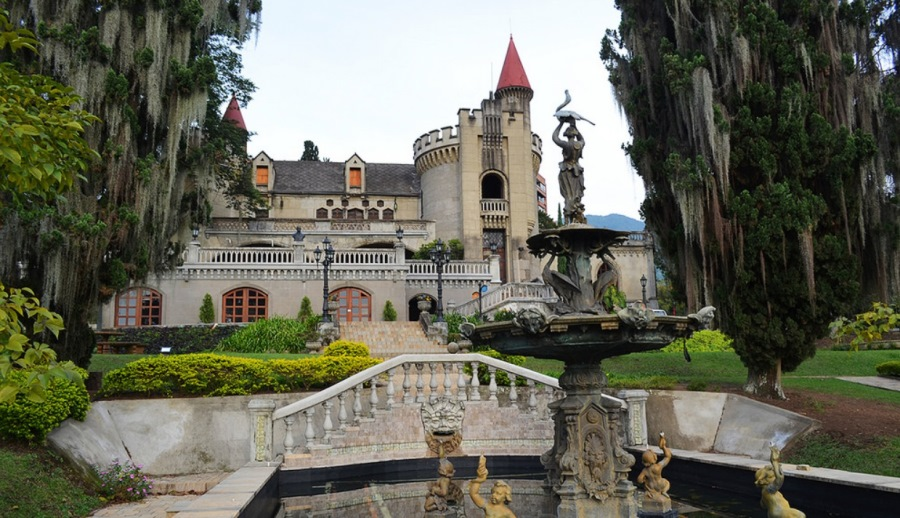
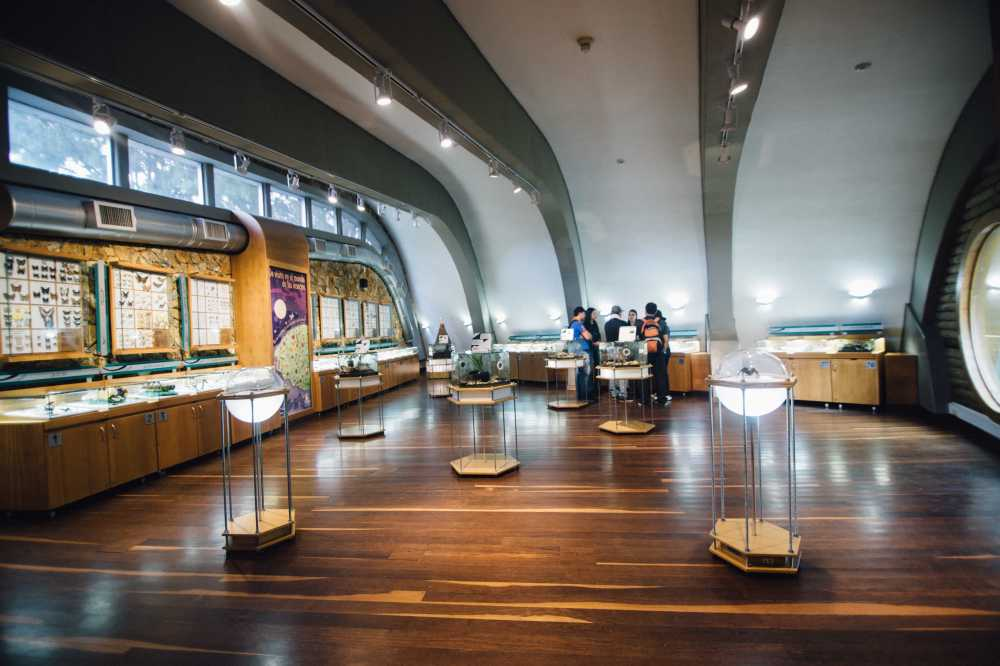

Turismo
- Todos
- Museos
- Parques
-
 Museos
Castillo
Es el Museo con la mayor colección de artes decorativas de Medellín, un atractivo turístico significativo para los amantes de la cultura, el arte y la tradición.
-
 Parques
Parques
Arví
Es un parque público abierto, creado para el disfrute de toda la comunidad local, nacionales y extranjeros, que mediante una oferta turística sostenible, propende por la conservación de las riquezas ambientales, culturales y arqueológicas.
-
 Parques
Parques
Hotel y Parque Ecológico
A solo 45 minutos de Medellín, en el corregimiento de Santa Elena Parque Ecológico Piedras Blancas, existe un espacio que elevará al máximo tus sentidos. El encuentro perfecto entre confort, naturaleza y un excepcional servicio te espera en el Hotel y Parque Ecológico.
-
 Museos
El Museo Entomológico
Es considerado el único en latinoamérica con gran diversidad de especies. Cuenta con una muestra de 15.000 insectos aproximadamente en perfecto estado de conservación.
-
Parques
Parque Explora
Es un centro interactivo para la apropiación y la divulgación de la ciencia y la tecnología con 22 mil metros cuadrados de área interna y 15 mil de plazas públicas.
-
 Museos
Museos
Jardin Botanico
Es un jardín botánico de unas 13.2 hectáreas de extensión, ubicado en la ciudad colombiana de Medellín. Cuenta con un recinto para eventos llamado el Orquideorama, un lugar arquitectónico para la exposición de flores.